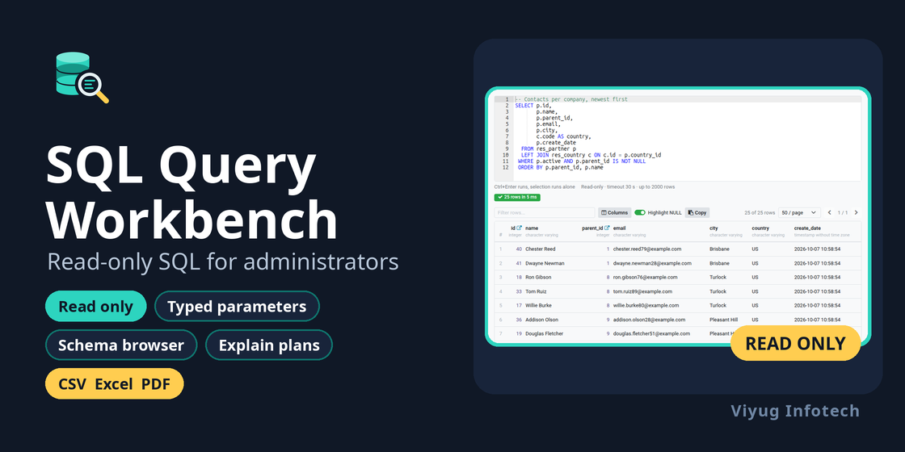
A SQL console for administrators that can only read: one SELECT, WITH or EXPLAIN at a time, on its own read-only connection, with a timeout and a row cap, always rolled back. Save queries with typed parameters, browse the schema, read query plans and export to CSV, Excel or PDF.
Read onlyTyped parametersSchema browserExplain plansCSV, Excel, PDFFree
Every run passes three independent checks. A statement that slips past one is stopped by the next.
Exactly one SELECT, WITH or EXPLAIN. Write and DDL keywords, COPY, SET, transaction control, file and backend functions, and blocked tables or columns are refused before anything reaches PostgreSQL. Comments and quoted text cannot hide a second statement.
The query runs on a separate read-only connection, inside SET TRANSACTION READ ONLY with a statement timeout and a lock timeout. Even nextval() fails, and a slow query is cancelled by PostgreSQL itself.
The transaction is rolled back after every run, success or error. Parameter values are bound by the database driver and never pasted into the SQL text.
SQL reads raw data: Odoo record rules and field access do not apply. The console says so on screen, access is limited to a dedicated group, and credential-like columns are masked.
Everything an administrator needs to answer a data question in minutes, and to hand the answer to colleagues safely.
Ctrl+Enter runs, a selection runs alone, the draft is kept per user. Open saved queries by tag or recall a recent run.
Row numbers, sticky header, column types, sorting, pagination, a filter box, hide and reorder columns, NULL highlighting, sum and average footer.
id and many2one columns read from an Odoo table link to the record form. Override the column-to-model mapping per saved query.
Tables with row estimate and size, columns with SQL type and Odoo field label, indexes and foreign keys. Insert a name or a ready SELECT into the editor.
A readable plan tree with estimated and actual rows, time and cost share. Sequential scans on large tables are flagged. EXPLAIN ANALYZE stays read-only.
Name, notes, tags and SQL, validated by a read-only dry run before they can be shared. SQL changes are tracked in the chatter.
Date, date and time, number, text, yes/no, selection, record and record list, with labels, required flags and defaults like start of month or fiscal year.
Share with groups or users: they run, they do not edit and do not see the SQL. Publish a query as a menu with a parameter form and export buttons.
CSV with separator, quote, header, BOM and line endings. Excel with real dates and numbers, frozen header and autofilter. PDF in portrait or landscape.
Send a saved query daily, weekly or monthly as Excel or CSV to users and contacts, skipping empty results if you like.
Every run is logged with user, duration, rows, status, error and parameters. List, pivot and graph views, and a retention job.
Row cap, timeout and export limit, with overrides per group. Blocked tables and columns, and masking of password, token and key columns.
Export saved queries with parameters and sharing groups to a JSON file and import them into another database.
Saved queries and run logs carry a company. Built-in values :company_id and :company_ids follow the companies selected by the user.
Largest tables, installed modules, scheduled actions, the email queue and more, ready to run and copy.
Screens from a demo database with fictional contacts and companies.
Editor with SQL highlighting, schema browser on the left and the results grid with the type under each column name, row count and run time. A reminder that SQL reads raw data sits under the editor.
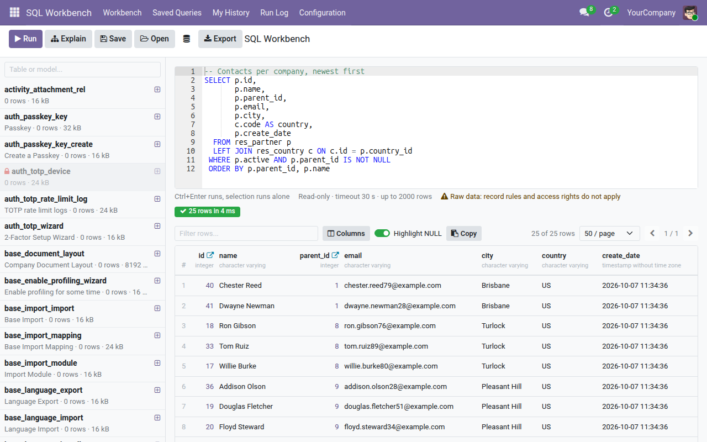
Start a new query, pick a saved one filtered by tag, or recall one of your recent runs.
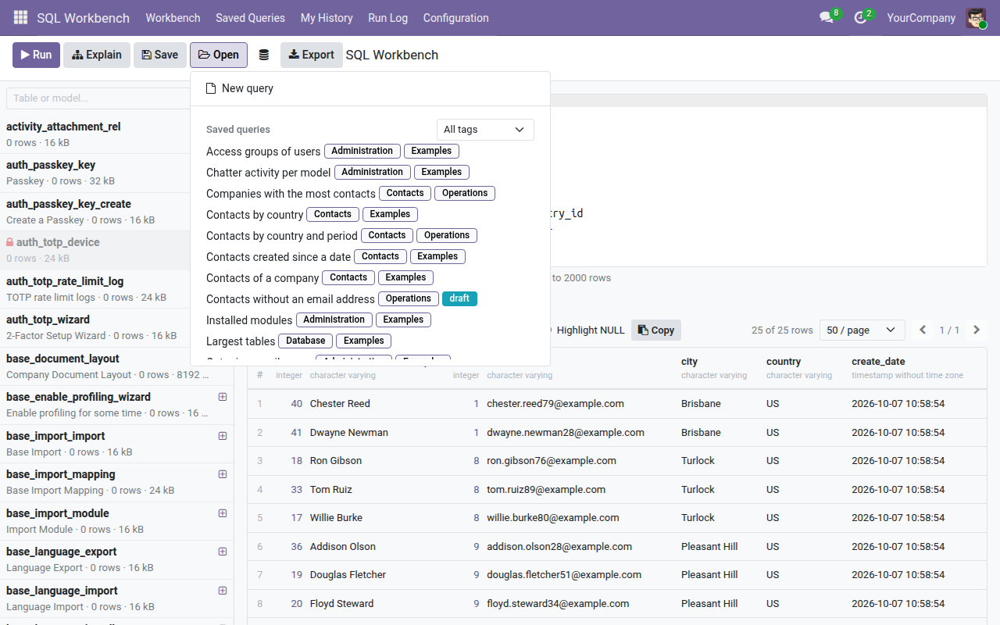
A typed parameter box, hide and reorder columns, sorting, quick filter, NULL highlighting and copy.
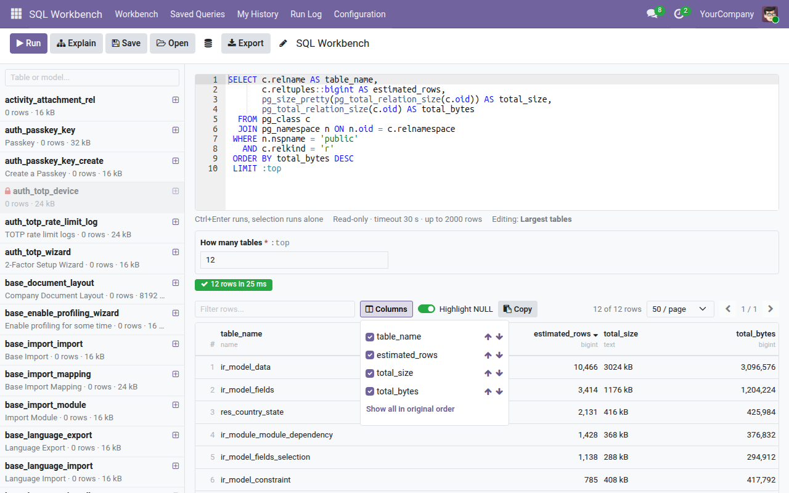
Columns with SQL type, Odoo field label and target model. The password column is masked in the grid, NULL values are highlighted.
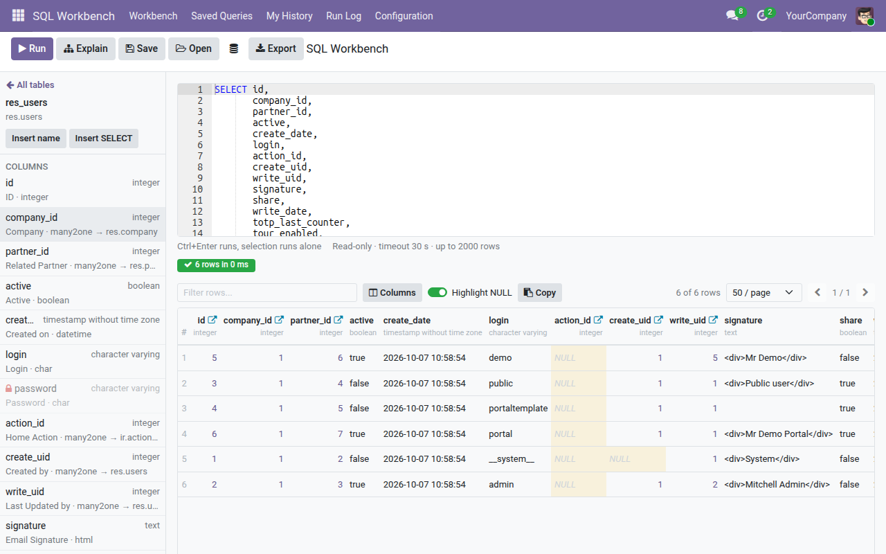
Estimated and actual rows, time and cost share per step. A sequential scan on a large table is flagged in yellow.
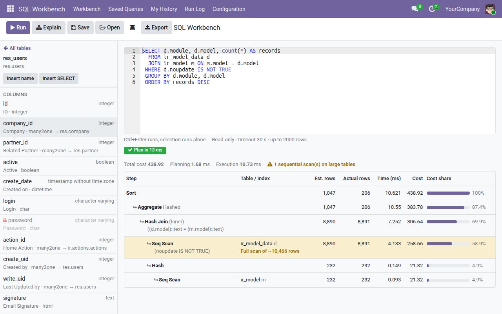
The PostgreSQL message and hint appear under the editor and the line is marked. No traceback.
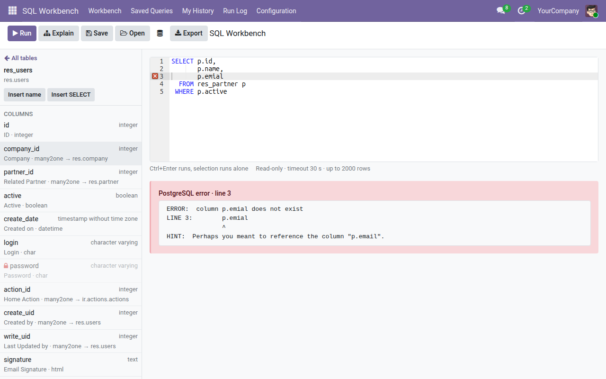
An UPDATE never reaches the database. Only SELECT, WITH and EXPLAIN can run.
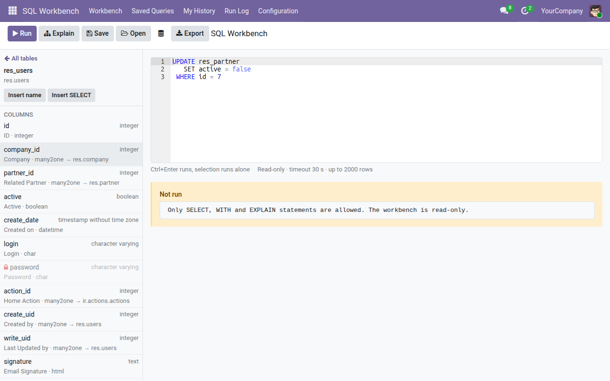
Tags, owner, sharing, run count and state, with a Run button on each line.
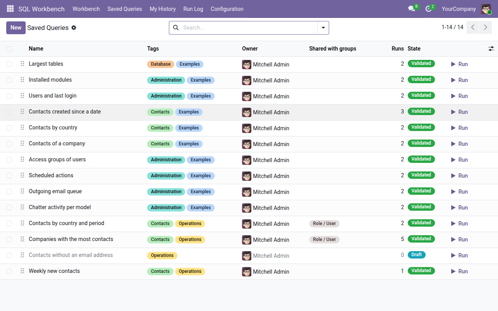
Dates with dynamic defaults, a country record list, a yes/no and a selection, each bound by the driver.
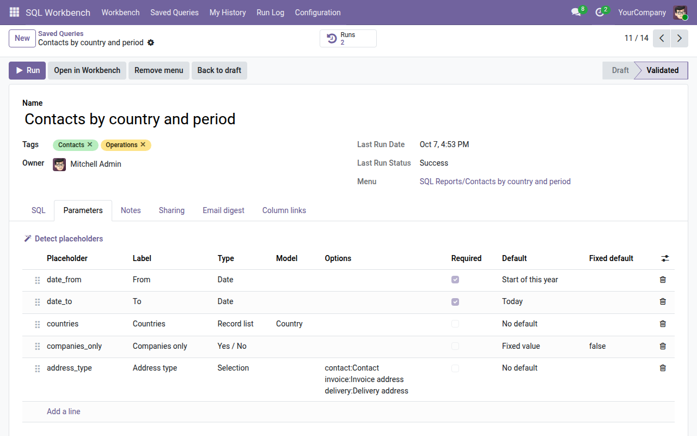
A published query opens a parameter form and the results. Run-only users never see the SQL.
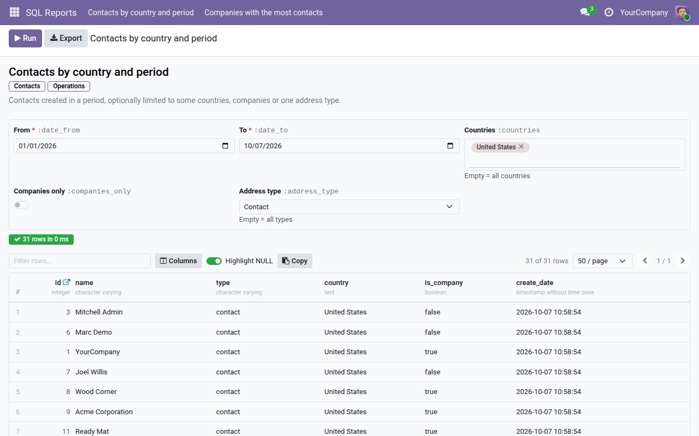
Share a validated query with groups or users and publish it as a menu entry under SQL Reports.
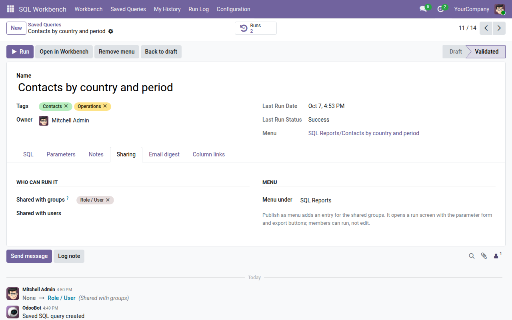
Every change to the SQL, parameters and sharing is written to the chatter.
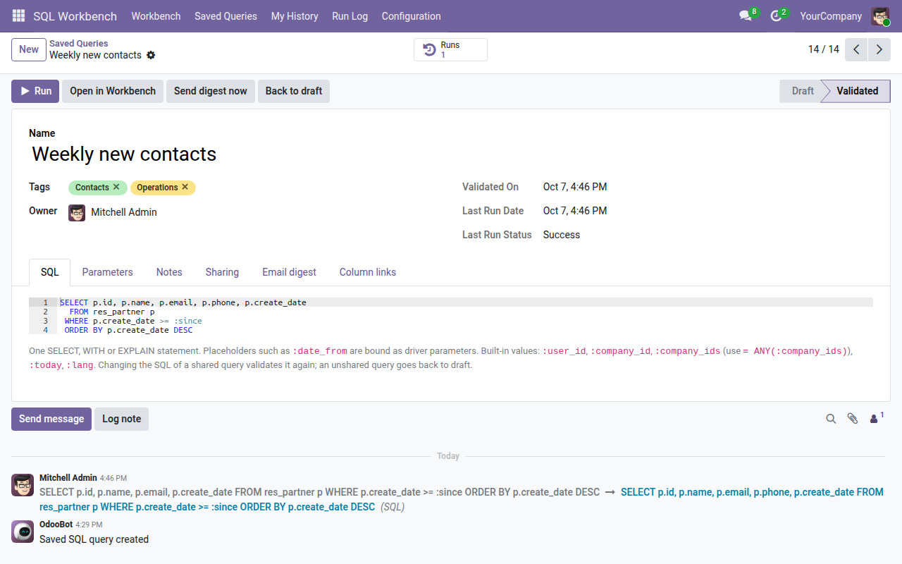
Choose the interval, file format and recipients. The digest runs as the owner with the parameter defaults.
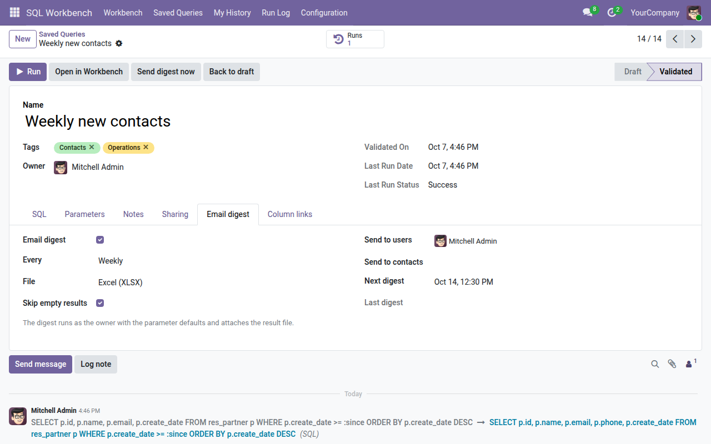
File name, separator, quote character, line endings, header row and UTF-8 BOM for spreadsheet tools.
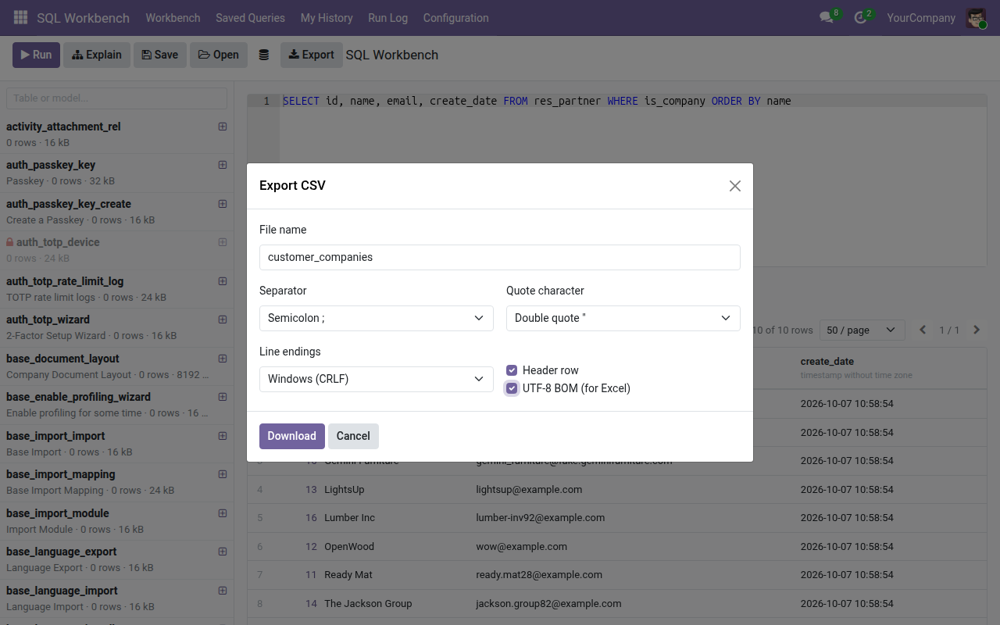
A printable result with company header, row count and parameters, in portrait or landscape.
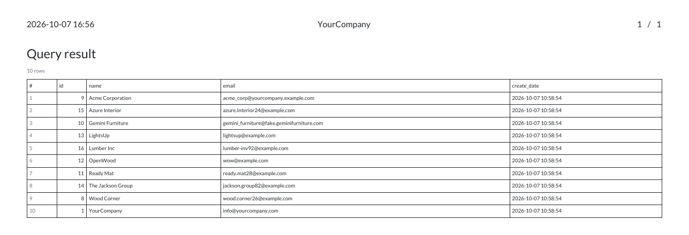
Average and slowest duration and failure count per query, as a pivot, list or graph.
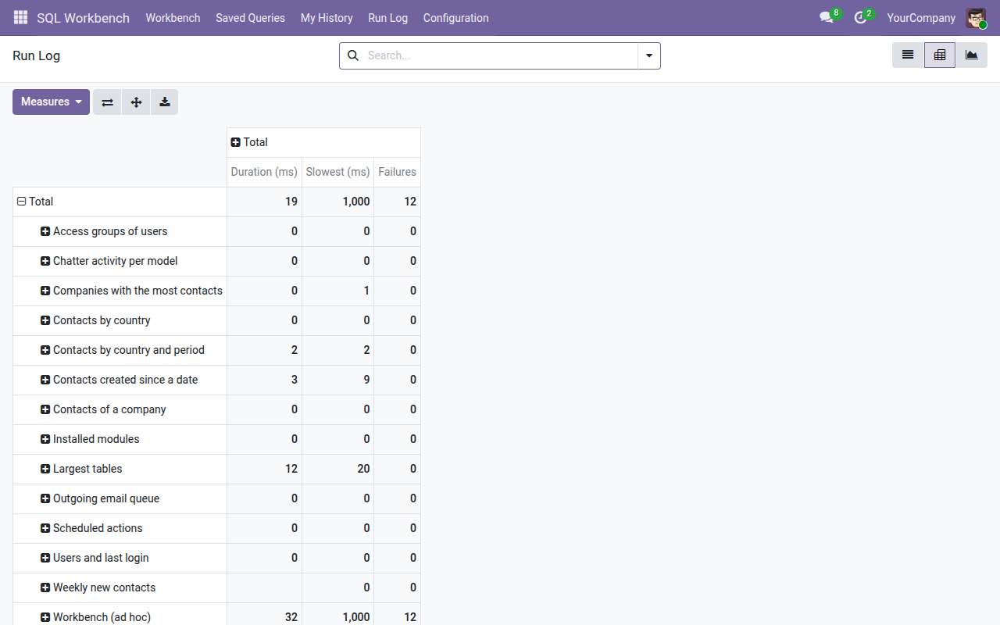
Row cap, timeout, export limit, group limits, blocked tables and columns, and masking.
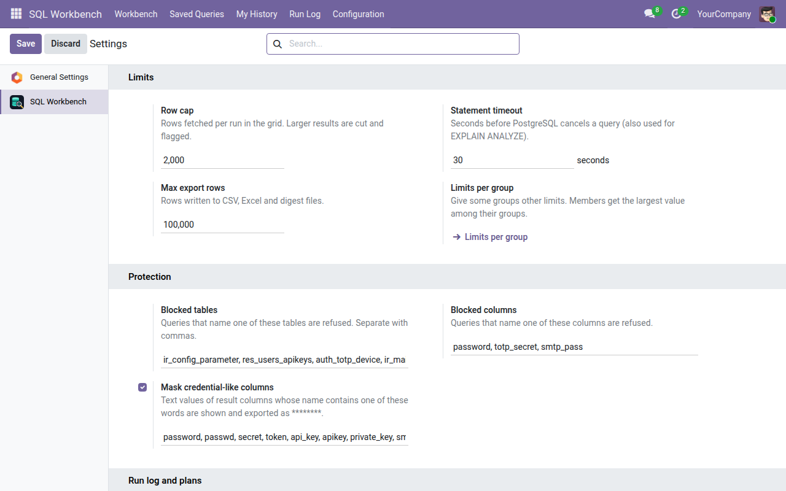
Settings > SQL Workbench. Defaults are safe; change them only if you need to.
| Setting | Default | What it does |
|---|---|---|
| Row cap | 2,000 rows | Rows fetched per run in the grid. Larger results are cut and flagged. |
| Statement timeout | 30 seconds | PostgreSQL cancels a query that runs longer, EXPLAIN ANALYZE included. |
| Max export rows | 100,000 rows | Rows written to CSV, Excel and digest files. |
| Limits per group | none | Higher or lower limits for chosen groups. Members get the largest value. |
| Blocked tables | system parameters, API keys, two-factor devices, mail servers and more | Queries naming these tables are refused. |
| Blocked columns | password, totp_secret, smtp_pass | Queries naming these columns are refused, and their values read as ******** in every query, whole-row and JSON reads included. |
| Mask credential-like columns | on | Text columns named like password, secret, token or api_key read as ******** inside every query and in results. |
| Keep run log | 90 days | Older runs are deleted every night. 0 keeps them. |
| Flag sequential scans | 10,000 rows | Plan view highlights full scans of tables at least this large. |
| Access | Can do |
|---|---|
| SQL Workbench / Administrator | Given to every Settings administrator. Edits every saved query, shares and publishes, schedules digests, sees the full run log and the settings. |
| SQL Workbench / User: run read-only SQL | Console, schema browser, own saved queries and own history. Grant only to people you trust with raw data. |
| Groups you share with | Run the shared, validated queries from a menu or the list. No console, no SQL text, no editing. |
Our paid apps build on the same idea of safe, reviewed access to your data. Explore their full specifications on their own pages.
One place for your AI provider, API key, request log with token usage, monthly budget and validated answers, shared by all AI apps in the database.
Find duplicate partners and broken product data, preview each repair, apply only what a manager approves, and roll back.
No. Only one SELECT, WITH or EXPLAIN statement is accepted, it runs in a READ ONLY transaction on a separate connection, and the transaction is always rolled back. Functions with side effects, such as nextval() or file access, fail or are refused.
Settings administrators by default. You can also give the SQL Workbench User role to a trusted person. Everyone else sees only the queries shared with them, without the SQL.
No. SQL reads the tables directly, so record rules, field groups and company filters are not applied. That is why access is limited and why sensitive tables and columns are blocked or masked. The console shows this warning under the editor.
PostgreSQL cancels it at the statement timeout (30 seconds by default) and the run is logged as a timeout. Results above the row cap are cut and flagged.
Write :date_from in the SQL and declare it as a date. The run form shows a date picker with the default you chose, and the value is passed to the database driver separately from the SQL. :user_id, :company_id, :company_ids, :today and :lang are filled in for you.
Yes. Validate the query, share it with a group and optionally publish it as a menu. Members get a parameter form, the results and export buttons.
No. Nothing is created in PostgreSQL. Saved queries are ordinary Odoo records.
Yes. It needs no database superuser and no extra PostgreSQL role. It uses the connection Odoo already has.
Only Discuss, for the chatter and email digests.
Questions, a query you cannot get right, or a feature you would like? Viyug Infotech will get back to you.
Email support: viyuginfotech@gmail.com